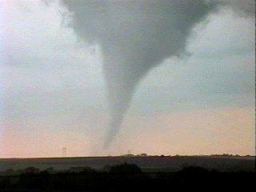
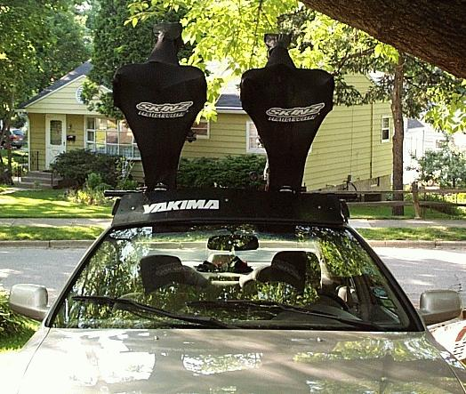

| A Tornado Makes Nebraska Interesting | ||
| Training Schedule Routes Pictures In Route Rockies Picture of funnel cloud from a
weather site. The cloud we saw was a half mile wide at the base.  Too much wind drag forced us to abandon the idea of putting the
bikes on top of the car.  |
Our group headed off for Colorado by
independent means. Pat and I left Madison in our car with plans to
meet our friend Maggie in Boulder. The others had their own
reasons for traveling on their own by car or van. When we met up
in Crested Butte on Saturday, June 16th, we would be talking about the
weather.
Pat and I wanted to get an early start on the Wednesday before the ride but this was not to be. Having forgotten my driving license, we turned around about an hour out and headed back to Madison. This was enough driving for us to figure out that the bikes have to go into the trunk of the car. We had the bikes on top with bras attached. This created so much wind drag, that I could see the gas gauge needle move as we traveled along at highway speeds. Putting the bikes in the trunk also meant fewer worries when the weather kicked up some pretty high cross winds. The weather played a big role in our first day of driving and in our arrangements for the next day. Our fist sign of something unusual was what looked like smoke pouring out of air conditioning vents. It was, of course, condensation but in amounts so surprising we stopped the car to be sure everything was okay. We wearily returned to the road, conducting a few condensation experiments along the way. As we crossed into Nebraska we were unaware of just how interesting things were about to get. Just heading out of Lincoln, we could see three large areas of falling rain as we continued driving in the hot sun. Moments later, looking to the right, we could see a wide funnel cloud, stretching from the sky to the ground. It seemed huge not unlike the big one in the movie Twister but then just moments later it was gone -- all we could see was rain. We continued to drive in sunshine and noticed a few people parked on bridges, taking in views of the late afternoon storms. Turning on the radio, we back to hear reports of the storms while at the same time the funnel cloud reappeared on our right. We would learn from the radio that it was indeed a tornado that had touched down and destroyed some trees and propane tanks. We did not hear any reports of people being injured then or later on the TV when we stopped for the night in Grand Island. I have to admit it was thrilling to see but I had no intention of lingering in the area. There were several powerful storms in the area and we seemed to be surrounded by severe thunderstorm warnings. The next day we would leave these storms behind us but they still managed to cause a change in our plans. Maggie was flying from Madison to Denver where she would pick up her car and then meet us in Boulder. However, due to the strong winds of the aforementioned storms, her plane was forced to land in Nebraska to refuel. Apparently, the strong headwinds meant that the plane did not have enough fuel to make the entire trip from Madison to Denver. As a result, we drove to Steamboat Springs after a short stop in Estes Park for Lunch. Traveling a day behind us, the Blanchards would be faced with rain and wind so hard that they were forced to wait it out under an overpass. Thankfully, we all made it through with only stories to tell. -joe |
{kind=link}
{kind=link}